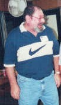

BHS 1967 Class Member
Scott Routh
Click to Email
Click to Email
 1967 |
 2002 |
| 2008 - Scott in the Iowa State Daily (Water Treatment Article) |
| 1967 |
 2002 |
| 2008 - Scott in the Iowa State Daily (Water Treatment Article) |